Capítulo 16. Padrões
Ao longo dos anos, diversas organizações tentaram criar abordagens arquitetônicas padrão, técnicas e ferramentas para sistemas de software. Outros padrões simplesmente surgiram como resultado do uso comum entre muitas organizações, como a Unified Modeling Language (UML).
Alguns desses padrões alcançaram ampla adoção e apoio significativo na indústria e no governo, e frequentemente são obrigatórios para uso em diferentes projetos. De modo geral, esses padrões abrangem uma quantidade significativa de conhecimento e orientação em engenharia. No entanto, é importante que arquitetos de software e outros interessados estabeleçam e mantenham uma perspectiva racional sobre esses padrões: para que eles servem, para que podem fornecer e para que não fornecem. Frequentemente, o impulso por trás de um padrão cria uma percepção (enormemente) exagerada de seu valor e impacto reais. Este capítulo contextualiza alguns dos padrões mais influentes e identifica seus pontos fortes e fracos.
Resumo deCapítulo 16
O QUE SÃO PADRÕES?
Definição. Um padrão é uma forma de acordo entre as
partes.
Do ponto de vista da arquitetura de software, existem muitos tipos diferentes de padrões relevantes: padrões para notações, ferramentas, processos, interfaces, organizações, e assim por diante. Os padrões podem vir de diferentes fontes: indivíduos, equipes, organizações de um único profissional, coalizões dessas organizações, governos ou organizações cujo objetivo específico é criar e codificar padrões, como o American National Standards Institute (ANSI), Ecma International, a International Organization for Standardization (ISO) e o World Wide Web Consortium (W3C). Quando um padrão é controlado por um órgão considerado autoritativo, o padrão é frequentemente chamado de padrão de jure (significando "do direito"). Padrões de jure frequentemente:
Por causa dessas características, padrões de jure tendem a ser os que são obrigatórios externamente para uso em projetos específicos. O outro tipo de padrão é o padrão de fato (significando "de fato" ou "na prática"). Padrões de fato frequentemente:
A linha entre um padrão de jure e um padrão de fato nem sempre é clara. Por exemplo, HTML é uma notação padrão para codificação de páginas Web e possui todas as características acima de um padrão de jure, mas o W3C não tem autoridade para obrigar editoras individuais da Web a seguir o padrão HTML em vez disso, questões de mercado relacionadas à compatibilidade dos navegadores tendem a ser o fator que impulsiona a adoção. Da mesma forma, extensões de fato para HTML foram criadas por empresas como Microsoft e Netscape, amplamente utilizadas simplesmente por causa do domínio de seus criadores no mercado de navegadores. No mundo da computação, padrões de fato populares frequentemente evoluem para padrões de jure: a Netscape desenvolveu a linguagem de script JavaScript Web por conta própria e incluiu suporte em seu navegador. A Microsoft criou uma linguagem semelhante para seu navegador Internet Explorer chamada JScript. À medida que mais e mais pessoas passaram a depender dessa tecnologia, a Netscape a submeteu a um órgão de normalização (Ecma International), onde foi padronizada como ECMAScript.
Tanto os padrões de jure quanto de fato podem ser abertos, proprietários/fechados, ou algo intermediário. Padrões totalmente abertos permitem a participação pública em seu desenvolvimento; Qualquer pessoa pode vir e sugerir melhorias ou mudanças. Padrões totalmente proprietários ou fechados significam que apenas os custodiantes do padrão podem participar de sua evolução. Órgãos de padronização como ANSI, ISO e Ecma International tendem a ficar em algum lugar intermediário; Alguns deles permitem a associação praticamente aberta, enquanto outros têm uma barreira de entrada maior (votação dos membros existentes ou uma taxa de associação elevada, por exemplo).
Stakeholders e arquitetos devem estar bem familiarizados com o estado de um determinado padrão antes de adotá-lo, fazendo perguntas-chave: Quem apoia o padrão? Como ela evolui? Depende de uma empresa específica que pode ser uma concorrente? Quais são suas histórias de sucesso e fracasso? Como o feedback pode ser incorporado ao desenvolvimento futuro do padrão?
Por que usar padrões?
Padrões podem proporcionar muitos benefícios tangíveis diferentes aos seus usuários. Muitos desses benefícios derivam da capacidade dos padrões de criar efeitos de rede. Um efeito de rede ocorre quando o valor de um determinado serviço ou produto aumenta à medida que mais usuários o utilizam. A Web apresenta um exemplo clássico de efeito de rede: à medida que mais e mais usuários publicam conteúdo na Web por meio dos padrões HTTP (Fielding et al. 1999) e HTML (Raggett, Le Hors e Jacobs 1999), o valor da Web como um todo aumenta para cada um de seus usuários, já que cada um desses usuários pode acessar o novo conteúdo sem qualquer investimento adicional.
Padrões podem garantir consistência entre projetos ou organizações. A consistência é frequentemente o principal motor de um efeito de rede. Considere o valor do uso de simbologia consistente em uma notação como UML: à medida que mais partes interessadas descrevem sistemas usando UML, mais pessoas podem desenvolver uma compreensão desses sistemas sem investir em aprender uma nova notação.
Certos tipos de padrões, como padrões de interface ou comportamento aplicados a produtos, podem ser usados para garantir interoperabilidade ou intercambiabilidade. Por exemplo, o protocolo HTTP pode ser visto como um padrão de interface; Ele dita como interagir com um componente, mas não como esse componente deve ser implementado internamente. Portanto, componentes desenvolvidos por diversas organizações podem todos interoperar (em algum nível) desde que estejam em conformidade com o padrão HTTP. A intercambiabilidade é um nível mais alto de padronização; Componentes de software intercambiáveis podem ser trocados entre si com pouco ou nenhum esforço. No mundo do software, peças intercambiáveis frequentemente apresentam características de qualidade diferentes: uma pode ser otimizada para uso em um sistema de processador único enquanto outra pode ser otimizada para uso em um sistema distribuído.
Os padrões são portadores do conhecimento de engenharia e podem levá-lo de projeto em projeto. Frequentemente, padrões são desenvolvidos porque as organizações continuam reinventando as mesmas técnicas ou ferramentas básicas repetidas vezes, a grande custo. Os padrões reduzem custos para todo o mercado ao coletar e disponibilizar o conhecimento de engenharia para todos.
Os padrões também servem como alvos para os fornecedores de ferramentas. Organizações que adotam padrões amplamente aceitos geralmente terão a possibilidade de comprar ferramentas prontas para uso que implementam o padrão junto com suplementos de treinamento como livros, vídeos e assim por diante, em vez de investir tempo e dinheiro para desenvolver seus próprios. Para os padrões mais populares, organizações que adotam frequentemente terão a opção de várias ferramentas concorrentes, e a concorrência no mercado pode impulsionar melhorias adicionais nessas ferramentas.
Padrões também podem reduzir o custo de ferramentas de software poderosas. Embora o software inicialmente seja caro de produzir, uma vez criado ele pode ser replicado infinitamente com pouco ou nenhum custo adicional por unidade. Em termos econômicos, o software faz excelente uso das economias de escala. Ao se conformar a um padrão, uma ferramenta pode ganhar apelo mais amplo e, assim, vender mais unidades. À medida que mais unidades são vendidas, a organização desenvolvedora pode amortizar o custo inicial de desenvolvimento em todas as unidades, reduzindo muito o preço que precisa cobrar para ser lucrativa. Por exemplo, considere duas ferramentas de software que custam 1 milhão de dólares para serem desenvolvidas. Se uma ferramenta vende 100 cópias, então o preço de cada unidade deve ser superior a $10.000 só para recuperar o custo de desenvolvimento. No entanto, se a ferramenta vender 100.000 cópias, o preço pode cair para apenas $10 por unidade. Uma ferramenta que segue um padrão amplamente aceito tem muito mais chances de vender muitas cópias do que uma ferramenta que não vende.
Com o tempo, os padrões evoluem. O procedimento para elaborar um padrão é geralmente regido e gerenciado pela organização de custódia do padrão. À medida que os padrões são adotados e utilizados, várias fraquezas ou desvantagens serão identificadas, e versões futuras do padrão poderão ser desenvolvidas para corrigir algumas delas. Organizações que adotarem o padrão podem aproveitar essas lições e as melhorias resultantes no padrão sem arcar com todo o peso dos custos de desenvolvimento.
Ter controle substancial sobre um padrão amplamente aceito pode conceder um enorme poder de mercado a uma organização custodial. Se uma única organização, como uma empresa comercial, desenvolve um padrão que se torna amplamente adotado, então essa empresa tem grande controle sobre como o padrão é usado e como ele evolui. Ele pode orientar a evolução do padrão em direções que correspondem aos seus próprios interesses comerciais ou afastá-lo dos interesses de um concorrente.
No geral, o uso de padrões pode trazer muitos benefícios. No entanto, padrões não são uma panaceia e devem sempre ser avaliados com um olhar crítico.
Desvantagens dos Padrões
Uma série de benefícios pode ser concedida a organizações que adotam e desenvolvem padrões. Ao fazer isso, as organizações devem trabalhar para mitigar ou evitar algumas de suas desvantagens.
A própria natureza dos padrões é um tanto contrária às realidades da arquitetura de software. Uma mensagem que este livro transmitiu é que as necessidades e qualidades desejadas dos softwares dos stakeholders variam amplamente de projeto para projeto e de domínio para domínio. Em contraste, os padrões frequentemente tentam aplicar os mesmos conceitos e processos a esforços de desenvolvimento muito diferentes. Essa é provavelmente a principal fraqueza da maioria dos padrões relacionados à arquitetura usados atualmente.
Uma desvantagem relacionada é que os padrões mais amplamente adotados (e, portanto, mais bem suportados) são aqueles que são os mais gerais. Isso não deveria ser surpreendente o potencial de adoção de um determinado padrão é proporcional à sua aplicabilidade. No entanto, isso significa que padrões específicos de domínio que podem transmitir muita orientação e valor específicos a projetos dentro de um domínio geralmente são os que têm menos suporte de ferramentas, pesquisadores e assim por diante.
A tensão principal no desenvolvimento de normas existe entre a superespecificação prescrever demais e limitar a utilidade do padrão e a subespecificação prescrever pouco e limitar os benefícios do padrão. Como era de se esperar, os padrões mais amplamente aceitos tendem a ser aqueles que são pouco especificados, deixando de fora detalhes semânticos significativos. Sem uma semântica bem definida, é difícil fazer julgamentos de qualidade sobre um produto simplesmente porque ele está em conformidade com um padrão.
Um problema relacionado é o problema do denominador comum menor. Como os padrões são frequentemente desenvolvidos por um comitê de organizações diversas e frequentemente concorrentes, os objetivos individuais das organizações tendem a divergir em muitas dimensões. Quando muitas organizações estão envolvidas, pontos de vista divergentes muitas vezes são simplesmente deixados de fora do padrão, incluindo apenas elementos agradáveis. Quando isso acontece, os padrões que surgem tendem a ser pequenos e pouco especificados.
O problema oposto também pode ocorrer: quando opiniões divergentes ocorrem entre os desenvolvedores de um padrão, as soluções de todos são incluídas, geralmente deixando a escolha da abordagem para o usuário do padrão. Esses padrões são subespecificados de forma diferente: embora não faltem opções para os usuários, também há pouca orientação sobre qual abordagem escolher; Os benefícios fundamentais de usar um padrão, como interoperabilidade e consistência, são reduzidos.
Padrões De Jure: As Torres de Marfim da Indústria?
Um elemento crítico que distingue os padrões de jure dos padrões de fato é a adoção no mercado. Um padrão de fato se tornou um padrão porque atende a uma certa necessidade para um número significativo de usuários. Para esses padrões, forças de mercado e efeitos de rede são os principais motores da adoção.
Padrões de jure (pelo menos, aqueles que não emergiram de padrões de fato) não têm motivações semelhantes. Elas são frequentemente desenvolvidas e codificadas sem adoção prévia no mercado. A qualidade desses padrões é assim questionada eles não competiram em um mercado aberto de ideias e, portanto, podem ser soluções inadequadas mesmo para os problemas que se pretendem abordar. Isso reflete uma crítica comum feita às soluções acadêmicas para problemas: que elas vêm da "torre de marfim", pois podem ser bem fundamentadas na teoria, mas não são testadas na prática. Isso é especialmente preocupante quando esses padrões são obrigatórios para uso em projetos. Aqui, existe um perigo significativo de que estar em conformidade com os padrões seja mais importante do que ser bom.
Padrões de jure geralmente surgem de boas intenções. Frequentemente, especialistas reconhecidos em um determinado domínio são contratados para ajudar a produzir o novo padrão. Às vezes, esses padrões resultam da composição de padrões de fato já existentes também.
Padrões de fato também não são uma solução há muitos exemplos de padrões de fato que apresentam problemas diferentes por exemplo, apoio pobre à evolução do padrão ou adoção generalizada que inibem a inovação.
As perguntas-chave a se fazer sobre qualquer padrão são:
Quando adotar
Uma das questões críticas que toda organização de desenvolvimento deve responder diante de um novo padrão é quando considerar a adoção. Como uma organização afeta e é afetada por um padrão depende em grande parte de como e quando ela escolhe adotá-lo. Tanto a adoção precoce quanto a tardia têm vantagens e desvantagens.
Alguns dos benefícios da adoção precoce incluem:
Algumas das desvantagens incluem:
Alguns dos benefícios da adoção tardia incluem:
Algumas das desvantagens da adoção tardia incluem:
Então, quando uma organização deve adotar um padrão? A resposta depende dos objetivos da organização. Se o padrão influenciar substancialmente o negócio principal de uma organização, provavelmente é mais útil para ela assumir o risco e absorver os custos de se envolver cedo. Se o padrão falhar e a organização se envolver, então apenas o investimento original é perdido; Se o padrão for bem-sucedido e a organização não tiver se envolvido, ela pode se ver indevidamente influenciada por um padrão que não pode controlar. Alternativamente, se o padrão for apenas uma ferramenta que a organização usará para melhorar seus próprios produtos, mas não fará parte do seu negócio principal, então esperar que outros paguem por amadurecer o padrão é uma decisão mais inteligente.
PADRÕES ESPECÍFICOS
Existem muitos padrões relacionados à arquitetura de software que são amplamente aceitos e em uso atualmente. Tentaremos categorizar cada padrão com base em seu propósito principal, mas reconheceremos que muitos desses padrões são difíceis de encaixar em uma única categoria.
Padrões Conceituais
Padrões conceituais tendem a abordar a variedade de atividades envolvidas na criação e uso da arquitetura. Por causa de seu amplo escopo, eles tendem a fornecer orientações de alto nível. Por exemplo, muitos focam no que deve ser documentado, mas não em como (ou seja, em qual notação) isso deve ser documentado. Padrões conceituais frequentemente se encaixam com outros padrões mais específicos para métodos ou notações, formando abordagens mais completas e detalhadas para o desenvolvimento de software e sistemas.
IEEE 1471
A IEEE 1471 (IEEE-SA Standards Board 2000) é uma prática recomendada pelo IEEE para descrição arquitetônica que frequentemente é obrigatória para uso por empreiteiros governamentais e outras organizações. Reconhece a importância da arquitetura para ajudar a garantir o desenvolvimento bem-sucedido de sistemas intensivos em software. O escopo do IEEE 1471 é limitado a descrições arquitetônicas; ou seja, descrições arquitetônicas podem estar em conformidade com o padrão, enquanto outros artefatos (produtos, processos, organizações) não podem. Descrições arquitetônicas são uma coleção de produtos usados para documentar uma arquitetura: Neste livro, nos referimos a esses artefatos como modelos arquitetônicos. No entanto, o próprio padrão não descreve uma notação específica para esses modelos. Em vez disso, especifica apenas uma quantidade mínima de conteúdo exigido nos modelos.
O IEEE 1471 adota uma visão orientada pelos stakeholders sobre arquiteturas, assim como fizemos neste livro. Descrições de arquitetura no IEEE 1471 identificam especificamente os stakeholders do sistema e suas preocupações. Uma descrição arquitetônica completa abordará todas as preocupações de todos os interessados, embora, na prática, isso seja mais um ideal do que uma realidade.
Descrições de arquitetura IEEE 1471 também são compostas por vistas que são instâncias de pontos de vista. A noção IEEE 1471 de pontos de vista e pontos de vista é consistente com a utilizada neste livro. Como discutimos, opiniões e pontos de vista organizam a arquitetura de acordo com as preocupações das partes interessadas. Assim como o padrão não defende o uso de nenhuma notação específica, também não defende o uso de nenhum conjunto específico de pontos de vista espera-se que os adotadores do padrão escolham pontos de vista que correspondam às preocupações de seus stakeholders. O padrão incentiva os implementadores a manterem consistência entre as visões e a documentarem quaisquer inconsistências conhecidas na descrição da arquitetura. Não explica como a consistência deve ser alcançada ou medida, nem os métodos que devem ser empregados para isso.
Como padrão, o IEEE 1471 é propositalmente leve em especificações (é difícil chamá-lo de subespecificado porque os limites de seu escopo são óbvios e deliberados). O padrão oferece um bom ponto de partida para pensar em capturar arquiteturas e não tenta defender uma única abordagem para cada domínio. As definições e conceitos que ele utiliza são mais ou menos consistentes com os encontrados neste livro.
No entanto, os usuários devem ter cuidado para não atribuir muita capacidade ao padrão. Nossa experiência é que muitas organizações acreditam que estar em conformidade com a IEEE 1471 equivale a "fazer uma boa arquitetura". Na verdade, estar em conformidade com a IEEE 1471 indica que um conjunto de produtos de "descrição de arquitetura" foi desenvolvido e designado pelos engenheiros do sistema, mas não garante que esses produtos sejam de alta qualidade, que capturem os aspectos críticos do sistema, que sejam expressos em notações apropriadas ou que qualquer metodologia razoável tenha sido usada para desenvolver e verificar a consistência desses produtos. Assim, as contribuições do IEEE 1471 estão, em grande parte, na definição de um vocabulário de conceitos e suas relações entre si.
DoDAF: A Estrutura de
Arquitetura do Departamento de Defesa
DoDAF (Grupo de Trabalho do Marco de Arquitetura DoD 2004) é um padrão do Departamento de Defesa dos EUA para documentar arquiteturas de sistemas. É o sucessor do framework anterior da arquitetura C4ISR e o substitui. DoDAF (e padrões semelhantes) são frequentemente chamados de frameworks de arquitetura. Aqui, "estrutura" geralmente designa um processo ou conjunto de pontos de vista que devem ser usados na captura de uma arquitetura. Essa sensação de framework é diferente dos frameworks de implementação de arquitetura que discutimos emCapítulo 9.
Assim como o IEEE 1471, as contribuições do DoDAF são principalmente no nível conceitual. O DoDAF prescreve mais profundamente os tipos de coisas que devem ser capturadas em uma descrição de arquitetura. Ao contrário do IEEE 1471, ele defende uma abordagem específica, mais distante das preocupações das partes interessadas, pois identifica pontos de vista específicos e os tipos de informações que devem ser capturadas em cada um deles. Assim como o IEEE 1471, o DoDAF deixa muitas escolhas para o usuário: por exemplo, o tipo de notação a usar para documentar as visualizações de arquitetura e como garantir consistência entre elas.
A terminologia DoDAF entra em conflito com a usada neste livro em relação a pontos de vista e pontos de vista. A correspondência é aproximadamente como mostrada emTabela 16-1. Ao longo do restante desta discussão, usaremos nossa terminologia (conjunto de pontos de vista, ponto de vista e ponto de vista). No entanto, o próprio padrão DoDAF utiliza os termos alternativos (visualização e produto).
Tabela 16-1. Diferenças de Terminologia
|
Conceito |
Nosso Mandato |
Termo DoDAF |
|
Um conjunto de perspectivas a partir das quais as descrições são desenvolvidas |
Conjunto de pontos de vista |
Vista |
|
Uma perspectiva a partir da qual as descrições são desenvolvidas |
Ponto de vista |
(Mais ou menos) produto |
|
Um artefato que descreve um sistema sob uma perspectiva particular |
Vista |
Produto |
O DoDAF é uma abordagem multi-ponto de vista. Os diversos pontos de vista abordam decisões de design arquitetônico em muitos níveis, desde os mais abstratos (conceitos, missões) até os razoavelmente detalhados (topologias individuais de componentes e conectores). Os pontos de vista do DoDAF são agrupados em quatro conjuntos.
Os pontos de vista DoDAF são otimizados para documentar arquiteturas complexas compostas por muitos nós interconectados e comunicantes. Essas arquiteturas são frequentemente chamadas de sistema-de-sistemas porque o sistema como um todo é composto por partes constituintes que são sistemas complexos com suas próprias arquiteturas.
Para ilustrar como o DoDAF é usado para modelar um sistema de sistemas, apresentamos uma aplicação Lunar Lander modelada em um subconjunto dos pontos de vista do DoDAF. Uma visualização OV-1 é uma representação gráfica estilizada da operação do sistema. É uma visão geral livre da aplicação e dos elementos importantes nela. As visualizações DoDAF não são otimizadas para sistemas simples de um nó como a aplicação básica Lunar Lander que abordamos neste livro até agora. No entanto, em um sistema de módulo lunar mais complexo, nós comunicantes como estações terrestres, satélites, sensores e assim por diante poderiam ser representados nessa visão. A Figura 16-1 mostra uma visão OV-1 de um exemplo de módulo lunar de sistema de sistemas. Aqui, o próprio módulo lunar se comunica com o solo utilizando um satélite para retransmitir dados a uma estação de comunicação via satélite, que por sua vez está conectada a uma estação terrestre. Esse é o ponto de vista DoDAF mais conceitual e menos rigoroso; outros produtos OV são menos conceituais e mais concretos.
A Figura 16-2 mostra outra visão OV do DoDAF, uma visão "Relações Organizacionais" do OV-4. Este diagrama mostra as relações entre várias organizações e suborganizações envolvidas em um projeto. Aqui, a principal agência espacial supervisiona várias subagências, com assistência de uma organização de supervisão. Uma subagência, a Equipe de Poissagem, é expandida para mostrar os papéis individuais atribuídos ao pessoal dentro dessa subagência. Note que o diagrama OV-4 representa principalmente as relações entre pessoas e não artefatos tecnológicos. A combinação de organizações, pessoal e tecnologia é tipica dos diagramas de OV no DoDAF.
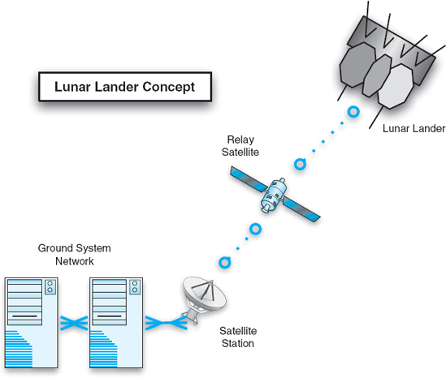
Figura 16-1. Vista do DoDAF OV-1 do módulo lunar.
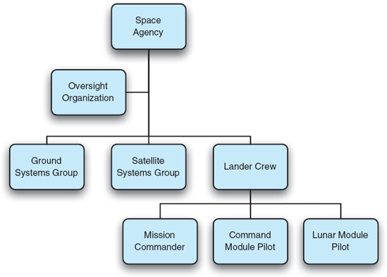
Figura 16-2. Diagrama DoDAF OV-4 do módulo lunar.
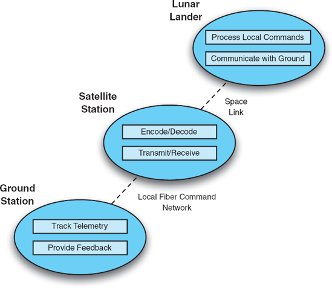
Figura 16-3. Diagrama DoDAF SV-1 do módulo lunar.
As visualizações do DoDAF SV tendem a ser mais técnicas. A Figura 16-3 mostra uma visão SV-1 "Descrição da Interface do Sistema". Os nós são destinados a corresponder aos nós mostrados nos diagramas OV. Isso mostra uma divisão inicial das responsabilidades funcionais entre os nós, bem como as interconexões entre eles. Muitas dessas visões SV-1 podem ser criadas para o mesmo sistema, representando o sistema em diferentes níveis de abstração ou mostrando interconexões entre funções individuais nos nós, em vez de apenas os nós em si.
O DoDAF faz uso extensivo do que chama de visualizações matriciais, também conhecidas como "diagramas N2". Essas vistas geralmente são representadas como tabelas. Ambos os eixos da tabela são preenchidos por um conjunto idêntico de nós. Esses nós geralmente representam elementos concretos como sistemas, subsistemas, hosts ou dispositivos. Cada célula no corpo da tabela representa uma possível interconexão entre dois dos nós. Se os dois nós estiverem conectados, detalhes sobre a conexão são listados na célula de interseção; caso contrário, a célula fica em branco. Uma visualização matricial contém todas as conexões possíveis entre elementos.
Visualizações matriciais frequentemente estão diretamente correlacionadas com visões de grafo (ou seja, caixas e setas) de um sistema. Cada nó do grafo é listado nos eixos da tabela, e cada linha do grafo corresponde a uma célula preenchida no corpo da tabela.
A Figura 16-4 mostra um desses diagramas, um diagrama SV-3 "Systems-Systems Matrix". Neste diagrama, os nós nos eixos são desenhados a partir do diagrama SV-1 anterior mostrado na Figura 16-3. Os nós na diagonal são acinzentados; A comunicação entre um nó e ele mesmo não é considerada. Cada nó restante descreve a troca de informações do nó nomeado no eixo vertical para o nó nomeado no eixo horizontal. Nós onde nenhuma informação é comunicada, ou onde não existe ligação (por exemplo, da Estação Terrestre diretamente para o módulo lunar) ficam em branco. Aqui, assim como em outros diagramas DoDAF, a quantidade de detalhes presentes é determinada pelo usuário. O diagrama na Figura 16-4 é relativamente simples, mostrando apenas o tipo de dados transmitidos e o protocolo utilizado. No entanto, o padrão DoDAF lista muitos tipos de informações que podem ser inseridas em cada nó: status, propósito, nível de classificação (como não classificado ou secreto), meios (como o tipo de rede ou protocolo utilizado), padrão de interface, e assim por diante.
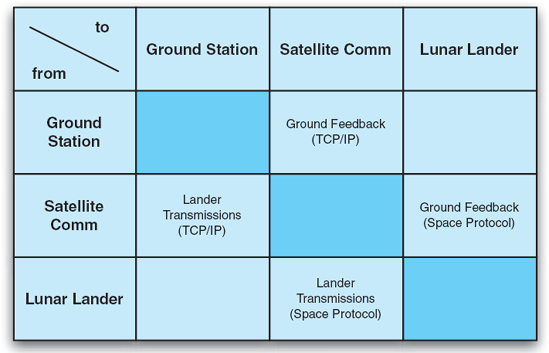
Figura 16-4. Diagrama DoDAF SV-3 do módulo lunar.
Os produtos de TV DoDAF focam em identificar e acompanhar os padrões técnicos que serão usados para implementar o sistema de sistemas descrito. O DoDAF assume que muitos aspectos desses sistemas serão implementados usando componentes reutilizáveis prontos a usar que estejam em conformidade com vários padrões publicados. Produtos de TV oferecem formas de identificar quais são esses padrões.
Uma parte de um diagrama TV-1 para o módulo lunar é mostrada na Figura 16-5. A coluna mais à esquerda da tabela mostra várias áreas em que os padrões se aplicam. A segunda coluna mostra subáreas. O DoDAF e uma especificação parceira chamada Joint Technical Architecture (JTA) enumeram essas áreas. Cada sistema ou subsistema, extraído da visão anterior do SV-1 neste caso, está associado a padrões extraídos dessas áreas. Cada sistema ou subsistema também pode receber um período absoluto ou relativo no qual irá cumprir ou aproveitar o padrão. Por exemplo, neste diagrama, a Estação Terrestre, a Estação de Satélites e o Módulo de Aterragem Lunar estão todos rodando sistemas operacionais que seguem o padrão POSIX (IEEE 2004). Nem todos os subsistemas devem usar todos os padrões selecionados, é claro. Aqui, a Estação Terrestre se comunica com a Estação Satélite usando XML, enviado por uma rede física de Fibra Distributed Data Interface (FDDI). Diferentes padrões (não mostrados aqui) facilitariam a comunicação entre os subsistemas da Estação de Satélites e do Módulo de Aterragem Lunar.
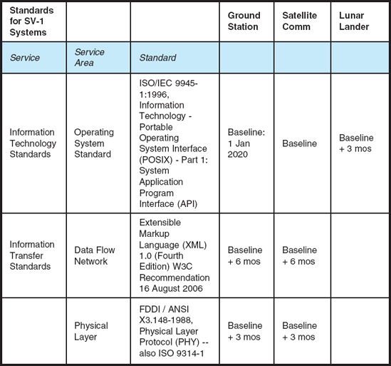
Figura 16-5. Diagrama DoDAF TV-1 para módulo lunar.
O DoDAF descreve, em grande detalhe, a amplitude de informações que podem ser capturadas em uma descrição de arquitetura. Também categoriza essas informações em pontos de vista e, quando apropriado, descreve possíveis pontos de correspondência entre os pontos de vista. Embora introduza uma complexidade substancial, essa amplitude é a principal força do DoDAF. De certa forma, o DoDAF pode ser visto como uma enorme lista de itens que podem ser úteis para capturar ou pensar no desenvolvimento e modelagem da arquitetura de um sistema. Como em qualquer notação de modelagem, os usuários devem decidir por si mesmos os tipos de modelos a criar, o nível de detalhe e assim por diante. O DoDAF oferece alguns conselhos nesse sentido, discutindo diferentes usos para modelos de arquitetura e os pontos de vista que são (total ou parcialmente) aplicáveis a esse uso. No entanto, mesmo com esse conselho, os usuários ainda precisam decidir como querem usar o DoDAF caso a caso.
O DoDAF, em geral, não exige nenhum método ou notação específica para documentar os vários pontos de vista. Portanto, seus usuários podem escolher qualquer subconjunto dos pontos de vista que desejam e documentá-los usando qualquer notação ou ferramenta que desejarem. Para seu crédito, a especificação DoDAF fornece exemplos para cada ponto de vista, incluindo exemplos UML. No entanto, esses exemplos raramente exercem todos os detalhes possíveis que podem ser capturados em uma visão. Seguir os exemplos de perto resultaria em um conjunto de opiniões que deixaria de fora detalhes importantes. Para fortalecer a conexão entre o DoDAF e o UML, o OMG apresentou um pedido de propostas para perfis UML do DoDAF (Object Management Group 2005). No entanto, UML não é ideal para todos os pontos de vista DoDAF (UML não possui um diagrama tabular que funcione para os pontos de vista matriciais, por exemplo). Os usuários devem selecionar as notações e então pesar as vantagens e desvantagens de sua escolha. Escolher várias anotações aumentará a dificuldade de coordena-las. Selecionar uma única notação pode deixar de fora detalhes importantes ou tornar alguns pontos de vista complicados.
Mensagem de conclusão. Comparado à simplificação do IEEE 1471, o DoDAF adota a mesma abordagem de alto nível, mas entra em muito mais detalhes. Ele é otimizado para capturar os relacionamentos entre pessoas, organizações, decisões de design de sistemas e padrões técnicos para sistemas complexos e compostos. Ele fornece aos usuários uma quantidade extensa de informações sobre que tipos de coisas capturar ao desenvolver uma arquitetura, mas muito menos sobre como capturar essas informações ou avaliar os resultados. Extensões adicionais ao padrão, como o já mencionado mapeamento das vistas DoDAF para UML, podem preencher essa lacuna. Devido ao amplo escopo do padrão, pode ser difícil para os usuários identificar as visualizações importantes a serem capturadas para um sistema específico. Por causa de sua especificidade, pode dar aos usuários uma falsa sensação de segurança que tudo foi coberto quando, na verdade, há algumas preocupações com as partes interessadas que estão sendo prejudicadas. Uma solução para isso é focar primeiro nas partes interessadas e preocupações (como sugere o IEEE 1471) e então identificar quais visões DoDAF correspondem a essas preocupações.
TOGAF: O Framework de Arquitetura de Grupos Abertos
O Open Group Architecture Framework (TOGAF)[23] (The Open Group 2003) é o produto de um esforço colaborativo iterativo dos membros do The Open Group, um conjunto de mais de 200 empresas e outras organizações. TOGAF é um "framework de arquitetura empresarial". Ele leva em conta preocupações além de hardware e software, como fatores humanos e considerações de negócios. Arquiteturas empresariais tendem a focar em soluções organizacionais para implementar objetivos de negócios. Elementos em uma arquitetura empresarial podem incluir bancos de dados, aplicações como planilhas e navegadores Web, várias máquinas cliente e servidor, bem como pessoas em diferentes funções. O TOGAF empresta conceitos e terminologia do IEEE 1471; suas noções de arquitetura, pontos de vista, pontos de vista e assim por diante são consistentes com as discutidas acima no contexto do IEEE 1471. Várias versões do TOGAF foram desenvolvidas ao longo dos anos; Cada versão cresceu para abranger mais aspectos da arquitetura. A versão 8 do TOGAF engloba:
O TOGAF consiste em três elementos principais: um processo de desenvolvimento de arquitetura chamado ADM (método de desenvolvimento de arquitetura); um "repositório virtual" de ativos de arquitetura (como modelos, padrões e descrições de arquitetura) extraídos de arquiteturas desenvolvidas na prática, chamado de Continuum Empresarial; e uma base de recursos composta por diretrizes, modelos, informações de contexto e assim por diante para auxiliar as empresas a seguirem o ADM.
O centro do TOGAF é o ADM, um processo para desenvolver arquiteturas empresariais. Como muitos outros processos modernos de software, como processos baseados em modelos espiralados (Boehm 1988) e RUP (Kruchten 2003), o ADM é iterativo, ou seja, as atividades são visitadas e revisitadas, com cada iteração subsequente refinando decisões tomadas em versões anteriores. Ele recomenda uma sequência de etapas e atividades que devem ser tomadas, mas deixa muito para a organização implementadora como definir o escopo do projeto, como tomar decisões dentro dessas fases, e assim por diante. Como mostrado na Figura 16-6, existem oito fases principais do ADM, começando com a Visão de Arquitetura (que é um esforço para definir o que será feito e alinhar a organização a esses objetivos). Fases subsequentes prosseguem com a elaboração de várias questões arquitetônicas, incluindo as identificadas acima, criando modelos ao longo do caminho. Para cada preocupação, diferentes pontos de vista são prescritos como formas de capturar aspectos dessas preocupações. Algumas dessas visões mapeiam naturalmente, por exemplo, diagramas UML, enquanto outras são definidas de forma mais geral, semelhante às visões DoDAF. As fases restantes focam em questões relacionadas à redução para a prática e na implementação das decisões tomadas em fases anteriores. Tecnologias são selecionadas, projetos de implementação são priorizados e os esforços reais de implementação são gerenciados, tudo isso no contexto dos ativos, pessoal e capacidades da organização. A fase final, Gestão de Mudanças de Arquitetura, aborda a avaliação dos esforços anteriores e a decisão de como e se prosseguir por outra iteração do processo.
Figura 16-6. Etapas principais do processo ADM do TOGAF (redesenhadas com base na especificação TOGAF).
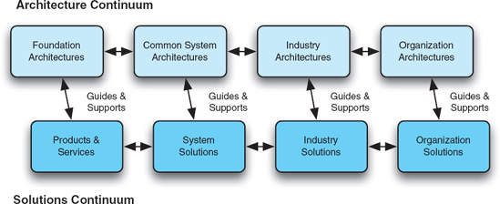
Figura 16-7. Continuum Empresarial TOGAF, consistindo no Continuum de Arquitetura e no Continuum de Soluções (redesenhado com base na especificação TOGAF).
A segunda grande parte do TOGAF é o "Continuum Empresarial". O Continuum Empresarial atua como um repositório de ativos recursos arquitetônicos e soluções conhecidas. Como tal, consiste em duas partes: o Continuum de Arquitetura e o Continuum de Soluções, conforme mostrado na Figura 16-7. De forma geral, os elementos do lado esquerdo do contínuo são mais tecnológicos e concretos; Os elementos do lado direito abordam questões empresariais e organizacionais. Por meio do Modelo de Referência Técnica e da Base de Informação de Normas TOGAF, o próprio padrão TOGAF taxonomiza vários tipos de componentes, serviços e padrões que podem ser encontrados ao longo do continuum empresarial. Esses incluem desde interpretadores de linha de comando até linguagens de programação, e-mail eletrônico e sistemas de gerenciamento de configuração.
A terceira grande parte do TOGAF é a base de recursos do TOGAF, que é um conjunto de informações e recursos úteis que podem ser utilizados no acompanhamento do processo ADM. Inclui conselhos sobre como configurar conselhos e contratos para gerenciar arquitetura, checklists para várias fases do processo ADM, um catálogo de diferentes modelos existentes para avaliar arquiteturas, informações sobre como identificar e priorizar diferentes habilidades necessárias para desenvolver arquiteturas, e muito mais.
O TOGAF se distingue de outras abordagens por seu grande tamanho e amplo escopo; o resumo nesta seção cobre apenas os principais elementos do padrão. O TOGAF foca em arquitetura empresarial, que é diferente em caráter do tipo de arquitetura de software discutido neste livro. A arquitetura empresarial é tanto sobre a arquitetura de uma organização quanto sobre a arquitetura de seus produtos. Elementos nas arquiteturas TOGAF tendem a ser organizações, pessoas e ativos de grande porte (aplicações, plataformas, máquinas, serviços empresariais, entre outros). Fora isso, o TOGAF reúne um conjunto grande e diversificado de melhores práticas para arquitetura. Ele prescreve não apenas um processo de desenvolvimento de arquitetura, mas define uma grande variedade de visões e preocupações, bem como elementos de solução que podem ser usados para satisfazer essas preocupações.
Mensagem de conclusão. O TOGAF complementa outras abordagens arquitetônicas ao levar em conta mais preocupações empresariais e organizacionais. Sua abordagem de alto nível, focada em arquitetura empresarial, significa que é melhor usada para lidar com elementos e ativos grosseiros, construindo sistemas de informação completos e não apenas aplicações de software. Assim como o DoDAF, o TOGAF oferece um conjunto substancial de melhores práticas a serem seguidas e listas de verificação para avaliação, mas os usuários individuais são responsáveis pelos detalhes. Seguir o TOGAF ajuda a garantir a minuciosidade, mas não necessariamente a qualidade.
RM-ODP
RM-ODP (ISO/IEC 1998) é uma norma ISO para descrever sistemas de processamento distribuído aberto (ODP). Embora as características dos sistemas ODP sejam descritas em várias páginas do padrão RM-ODP, geralmente podem ser descritos como sistemas de informação desenvolvidos para rodar em um ambiente de nós de processamento independentes e heterogêneos conectados por uma rede. Principalmente, o padrão RM-ODP define cinco pontos de vista e descreve linguagens de pontos de vista associadas para documentar a arquitetura de um sistema ODP. Esses pontos de vista são:
Esses pontos de vista (e suas línguas associadas) possuem vários níveis de concretização. Os pontos de vista computacionais e de engenharia são mais concretos e, portanto, mais restritos, pois têm como objetivo ajudar a garantir a interoperabilidade e portabilidade dos componentes. Os pontos de vista empresarial e de informação são mais gerais e, portanto, suas linguagens são menos restritas.
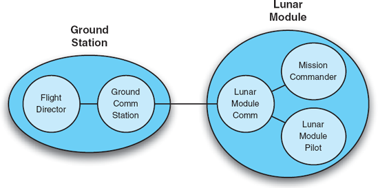
Figura 16-8. Exemplo de visão empresarial RM-ODP.
As figuras 16-8 mostram uma visão empresarial RM-ODP de exemplo. Os elementos de visão empresarial incluem pessoal e componentes de aplicação de alto nível, remetendo aos tipos de elementos abordados pelo TOGAF. A visão empresarial analisa o sistema de forma holística, em termos de escopo geral e de seu lugar dentro da organização maior. Visões empresariais também podem descrever limites de agêncialimites de responsabilidade ou controle.
Em contraste, a Figura 16-9 mostra um exemplo de visão de engenharia RM-ODP. Essa visão mostra como um sistema terrestre pode se comunicar com um módulo lunar por meio de um canal de comunicação complexo implementado por duas pilhas de rede comunicantes. Aqui, os elementos são mais orientados para a tecnologia, e elementos humanos não aparecem. Em geral, ambas as visões seriam acompanhadas por texto explicando os diagramas, os diversos elementos e suas interconexões. A notação usada acima, com ovais e interconexões, é usada na especificação RM-ODP, mas não é canônica: Muitas notações diferentes (incluindo, por exemplo, UML) poderiam ser usadas para desenhar esses diagramas.
Assim como o DoDAF e o TOGAF, RM-ODP foca em que tipos de coisas devem ser modeladas em uma arquitetura, mas não especificamente como essas coisas devem ser modeladas. No entanto, o RM-ODP vai um passo além desses dois padrões: em vez de prescrever uma notação específica para cada ponto de vista, a especificação RM-ODP prescreve uma série de características que uma notação que descreve o ponto de vista deve ter. Portanto, linguagens de ponto de vista RM-ODP não são linguagens no sentido tradicional, mas sim conjuntos de requisitos para as línguas. O RM-ODP inclui uma especificação separada que descreve, em um nível muito alto, como várias linguagens formais de especificação [por exemplo, LOTOS (ISO 1989), Z (Spivey 1988) ou SDL-92 (Telecommunication Standardization Sector of ITU 2002)] podem ser usadas para descrever a semântica arquitetônica para arquiteturas RM-ODP. Aqui, ele lista um conceito RM-ODP e, em seguida, identifica um conceito formal de linguagem de especificação que poderia ser usado para implementar esse conceito. Esse nível de correspondência não é suficiente para dar aos usuários orientações sérias sobre como aproveitar essas linguagens formais de especificação para implementar o RM-ODP.
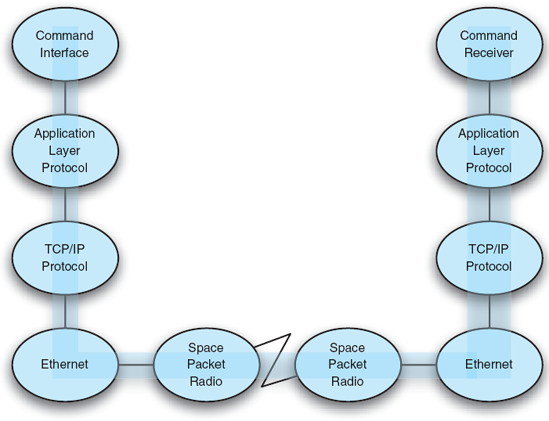
Figura 16-9. Exemplo de visão de engenharia RM-ODP.
Mensagem de conclusão Como padrão, o RM-ODP é muito semelhante ao DoDAF, embora o número de pontos de vista seja mais limitado e focado. Assim como o DoDAF, uma arquitetura especificada de acordo com o padrão RM-ODP pode ou não alcançar certas qualidades; o principal valor agregado pelo RM-ODP é garantir que os arquitetos pensem e documentem certos aspectos da arquitetura que impactam várias qualidades distribuibilidade, interoperabilidade e assim por diante. No fim, cabe aos arquitetos realmente garantir essas qualidades. Embora alguns mapeamentos entre os conceitos RM-ODP e métodos formais sejam especificados, existe uma grande lacuna entre eles que deve ser preenchida por usuários individuais. Essa lacuna é grande demais para afirmar que o RM-ODP apoia particularmente as atividades de análise formal.
Padrões Notacionais
Padrões notacionais definem notações padrão para anotar decisões de projeto. Padrões notacionais podem ser usados para realizar/implementar certos elementos de padrões conceituais; por exemplo, uma notação como UML pode ser usada como uma forma de documentar as várias visões DoDAF. De certa forma, qualquer linguagem codificada de descrição arquitetônica, como aquelas pesquisadas emCapítulo 6, pode ser visto como um padrão notacional de fato. Nesta seção, examinamos anotações que realmente passaram por um processo ou comitê de padronização e que ganharam notoriedade ou uso por serem padrões.
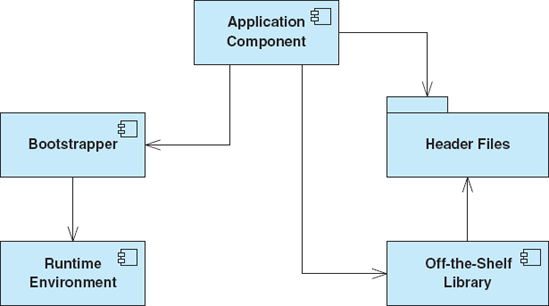
Figuras 16-10. Diagrama UML sem perfil.
UML A Linguagem Unificada de Modelagem
Abordamos vários aspectos do UML (Booch, Rumbaugh e Jacobson 2005) ao longo dos capítulos anteriores deste livro: sua notação, suas visualizações, seu metamodelo (Object Management Group 2002) e assim por diante. Esta seção focará no UML como padrão e descreverá suas vantagens e desvantagens sob essa perspectiva.
UML fornece uma sintaxe padrão para descrever uma grande variedade de aspectos de sistemas de software. O UML básico (sem extensões) prescreve pouquíssima semântica para acompanhar essa sintaxe. É possível que o mesmo elemento ou diagrama signifique coisas totalmente diferentes. Por exemplo, o conector de seta tracejada em UML indica uma dependência entre dois elementos vinculados. Essa dependência pode significar "necessário para construir", "plugs-em" ou "chamadas". Não há como, sem contexto ou informação adicional, de um stakeholder olhar para uma seta de dependência no UML e ter uma ideia clara do que isso significa. Essa situação é retratada na Figura 16-10 todas as dependências são especificadas, mas o leitor sabe pouco sobre elas.
UML que segue apenas o padrão básico estabelece uma representação simbólica comum dos elementos e suas relações. O fato de um sistema ser descrito em UML implica pouco sobre a qualidade desse sistema bons projetos podem ser documentados em UML tão facilmente quanto maus.
O valor do UML pode ser substancialmente aumentado por meio do uso de extensões e perfis UML. Lembre-se de que um perfil UML é um conjunto coordenado de extensões para UML. De certa forma, perfis UML são padrões que especializam o padrão base UML para diferentes domínios. A OMG, a organização que gerencia o padrão UML, também gerencia diversos perfis UML de jure padrão, incluindo perfis para sistemas CORBA, integração de aplicações empresariais e engenharia de sistemas. Este último, chamado SysML, é discutido abaixo.
Perfis podem incluir estereótipos, valores marcados e restrições. Estereótipos UML permitem que os usuários especializem símbolos UML existentes para adicionar semântica específica de projeto ou domínio. Estereótipos podem especializar a seta de dependência para significar <<chamadas>> ou <<necessário-de-construir>> ou <<conecta-se>>. Por exemplo, as Figuras 16-11 mostram o mesmo diagrama UML das Figuras 16-10, exceto que as dependências são estereotipadas. Esse diagrama é muito mais legível e fornece substancialmente mais informações. Para ser totalmente útil, no entanto, um perfil UML para um projeto deve ser acompanhado de documentação detalhada explicando quando e como usar os diversos estereótipos, valores marcados e restrições, bem como seu significado. Com o uso adequado de perfis, uma descrição UML torna-se uma ferramenta valiosa para comunicação com stakeholders e compreensão do sistema, além de ter impactos positivos na rastreabilidade e análise.
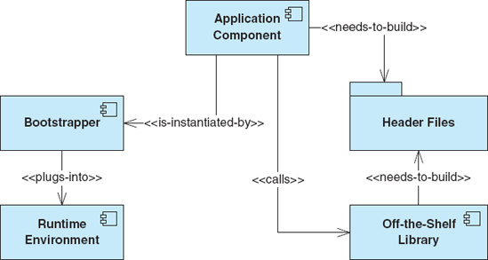
Figuras 16-11. Diagrama UML com perfil.
Mesmo com perfis, porém, o UML e suas ferramentas associadas (atualmente) não são adequados para a verificação de propriedades de qualidade específicas. O sistema descrito vai atender aos seus requisitos? Ser eficiente? Ser econômico? Ficar livre do impasse? Para determinar respostas a perguntas como essas, métodos adicionais além do UML, que vão desde inspeções até testes e verificação formal, devem ser integrados separadamente ao processo de desenvolvimento.
Mensagem de conclusão. UML não é uma panaceia para desenvolvimento de software baseado em arquitetura. O UML fornece um conjunto de notações simbólicas comuns para que arquitetos anotem e comuniquem certos tipos de decisões de design. Os tipos de diagramas fornecidos no UML permitem que arquitetos modelem uma grande variedade de conceitos, embora certamente existam decisões de design arquitetônico que não podem ser facilmente capturadas no UML. Perfis UML devem ser usados para melhorar o rigor e a compreensibilidade dos diagramas UML, mas os perfis têm seus limites. Perfis podem decorar diagramas existentes, mas não podem criar diagramas totalmente novos. Modelar um sistema em UML oferece poucas garantias sobre esse sistema o UML pode ser usado para documentar tanto arquiteturas boas quanto ruins (embora o UML facilite a compreensão, comunicação e avaliação de arquiteturas).
SysML
Apesar da grande variedade de conceitos de modelagem suportados no UML, diferentes esforços de engenharia exigem ainda mais amplitude de modelagem. Um bom exemplo disso é o SysML (SysML Partners 2005). O SysML é um esforço de uma coalizão de mais de vinte organizações de engenharia (principalmente corporações, mas também universidades e outras organizações) (SysML.org 2007) para personalizar UML para engenharia de sistemas. Com relação à padronização, a comunidade SysML adotou uma abordagem interessante de duas frentes. Um grupo está desenvolvendo e divulgando uma versão de código aberto do padrão SysML sob uma licença que permite aos usuários redistribuir e modificar o SysML por conta própria. A partir dessa versão de código aberto, foi criada uma versão oficial padrão OMG do SysML. "OMG SysML" é uma marca registrada e evolui, assim como o UML, através dos comitês e processos de normas do OMG.
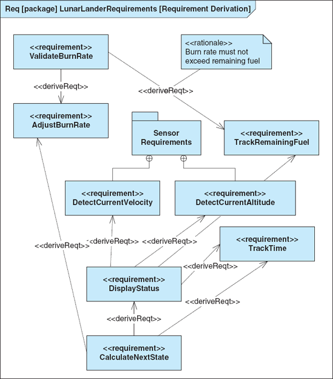
Figuras 16-12. Diagrama de requisitos do SysML para módulo lunar.
Muitas pessoas e organizações percebem o UML como tendencioso demais para software para modelar preocupações de engenharia de sistemas que incluem elementos como hardware, redes, organizações de desenvolvimento e assim por diante. Claro, muitos diagramas UML podem ser interpretados de maneiras que capturam essas preocupações (por exemplo, um diagrama de blocos tradicional de engenharia de sistemas se assemelha muito a um diagrama de classes em muitos aspectos). O SysML inclui um subconjunto de UML, mas também o estende. Diagramas reutilizados do UML são os diagramas de atividade, classe, estrutura composta, pacote, sequência, máquina de estados e casos de uso. Dois desses diagramas são renomeados para SysML: diagramas de classes são chamados de diagramas de "definição de blocos" e diagramas de estrutura composta são chamados de diagramas de "bloco interno". O SysML também adiciona estereótipos ao UML, além de dois novos tipos de diagramas: diagramas de requisitos e diagramas paramétricos. Diagramas de requisitos mostram os requisitos do sistema e suas relações com outros elementos. Diagramas paramétricos mostram restrições paramétricas entre elementos estruturais, que são úteis para análise de desempenho e quantitativa.
As figuras 16-12 mostram um diagrama de requisitos do SysML para a aplicação do módulo lunar. Este diagrama mostra apenas os requisitos e suas relações; um diagrama de requisitos mais complexo pode, na verdade, incluir detalhes adicionais para cada requisito, como o texto real descrevendo o requisito, um ID único, e assim por diante. Diagramas de requisitos também podem ser usados para associar requisitos a elementos de outros diagramas, como casos de uso. Sintaticamente, diagramas de requisitos reutilizam e especializam principalmente elementos dos diagramas de classes, usando estereótipos sobre classes e relacionamentos para tornar esses elementos específicos dos diagramas de requisitos.
As figuras 16-13 mostram um diagrama paramétrico SysML. Diagramas paramétricos são especializações dos diagramas de blocos internos do SysML diagramas de estrutura composta em UML. Esses diagramas permitem que arquitetos associem parâmetros quantitativos a vários elementos do modelo. Esses parâmetros podem então ser associados a modelos matemáticos, equações ou técnicas de análise que podem ser usados para avaliar ou avaliar partes do sistema quantitativamente. Por exemplo, vários elementos de armazenamento de estados (o Relógio, o Estado do Módulo de Aterrissado) fornecem valores para a equação do próximo estado, que é usada para calcular o próximo estado da simulação do módulo lunar.
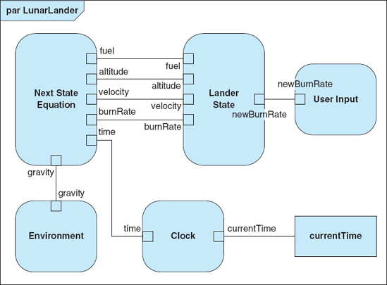
Figuras 16-13. Diagrama paramétrico SysML para módulo lunar.
O desenvolvimento do SysML é consistente com nossa afirmação anterior de que UML não é necessariamente uma solução completa para modelagem arquitetônica. Os desenvolvedores do SysML deixaram de fora certos diagramas UML que acreditavam serem supérfluos ou desnecessários, e adicionaram novos diagramas que estavam faltando. O SysML não foi tão universalmente apoiado ou adotado quanto o UML, apesar de não ser uma ruptura radical com o UML 2 tradicional. O suporte a ferramentas na forma de ambientes de modelagem, por exemplo, ficou atrás do UML, e enquanto alguns ambientes de modelagem UML, como o Telelogic Rhapsody, têm algum suporte explícito a SysML, muitos outros não têm. Isso indica que mesmo um grande grupo de organizações influentes não pode necessariamente forçar a adoção de qualquer padrão específico. Note também que até mesmo os novos diagramas SysML reutilizam e sobrecarregam símbolos UML existentes, provavelmente um compromisso para fornecer algum grau de suporte à modelagem em ferramentas que não são conscientes do SysML.
Mensagem de conclusão. SysML é um exemplo de como os padrões podem evoluir, mudar e se desmembrar. Ao reutilizar partes substanciais do padrão UML, os parceiros do SysML conseguiram economizar um enorme esforço, além de permitir que os usuários aplicassem seu conhecimento existente em UML em um contexto de engenharia de sistemas. No entanto, as mudanças e extensões que fizeram à UML conservadora como são foram uma faca de dois gumes. Por um lado, eles proporcionam maior expressividade para engenheiros de sistemas. Por outro lado, eles reduziram a quantidade de suporte de ferramentas existente para os usuários. Mesmo padrões apoiados por uma quantidade substancial de organizações influentes ainda precisam conquistar muitos corações e mentes em méritos técnicos e comerciais para alcançar sucesso amplo.
Um Conto de Dois Padrões
O capítulo 6 descreveu duas linguagens de modelagem, AADL (Feiler, Lewis e Vestal 2003) e ADML (Spencer 2000), sob uma perspectiva técnica. No entanto, essas duas linguagens de modelagem também são padronizadas AADL é padronizada pela Society of Automotive Engineers (SAE) e ADML é padronizada pelo The Open Group. Ambos os padrões descrevem novas notações independentes que podem ser usadas para modelar arquiteturas. A AADL está se tornando cada vez mais bem-sucedida, enquanto a ADML efetivamente fracassou. Por que? A resposta não é necessariamente clara ou simples; Muitos fatores relacionados estão interagindo aqui.
AADL é uma linguagem complexa. Possui uma sintaxe rica e, até certo ponto, visualizações gráficas ainda estão sendo desenvolvidas. No entanto, a principal motivação para adotar a AADL é que ela oferece capacidades e ferramentas de análise atraentes que não são fáceis de obter com outras notações ou abordagens. Não é apenas um pequeno ajuste em uma notação existente como UML. Os desenvolvedores da AADL começaram focando em uma comunidade de usuários conhecidos por precisar de suas capacidades únicas engenheiros de sistemas nos domínios automotivo e de aviônica, e outros trabalhando com desenvolvimento de sistemas embutidos em tempo real. Aproveitar o suporte e a comunidade de usuários existentes do UML também faz parte da estratégia da AADL; um perfil UML para AADL está sendo desenvolvido e refinado. No caso da AADL, a padronização é apenas uma pequena parte do motivo pelo qual a AADL parece estar conquistando corações e mentes. Oferecer capacidades inovadoras, fazer uso criterioso de outros padrões e direcionar uma comunidade específica de usuários com necessidades que correspondem às capacidades únicas da AADL estão influenciando o crescimento da AADL.
O ADML, comparado ao AADL, é relativamente simples. Do ponto de vista técnico, ele combina os conceitos centrais do Acme com algumas inovações em tipos e meta-propriedades e os benefícios de usar XML como meta-linguagem. Como padrão, o ADML não conseguiu adoção ampla, e o suporte e interoperabilidade de ferramentas previstos nunca surgiram.
É difícil dizer o motivo. Ao contrário da AADL, as melhorias do ADML em relação às tecnologias anteriores são incrementais. O ADML não era direcionado a um domínio ou comunidade de usuários específico, embora alguma documentação do ADML note sua utilidade na modelagem de arquitetura empresarial e aponte deficiências no UML nesse aspecto. O ADML também pode ter sofrido devido à disponibilidade de alternativas contemporâneas como Acme, Darwin e xADL 1.0, falta de ferramentas iniciais para ajudar a motivar o crescimento da comunidade, entre outros.
Em uma nota positiva, porém, muitos dos conceitos de ADML acabaram surgindo no UML 2 (e, portanto, também no XMI). O UML já tinha uma enorme base de usuários, e essas contribuições reforçaram o suporte para modelagem estrutural que era considerado uma deficiência do UML 1.x. As ideias do padrão ADML foram muito melhor recebidas quando passaram a fazer parte do UML. Claro, definir um novo padrão como o ADML é muito mais fácil do que convencer a comunidade UML já madura a incorporar essas novas ideias. No entanto, as contribuições do ADML foram um encaixe natural, abordando desvantagens bem conhecidas do UML. Incorporar um padrão complexo com muitas ideias novas e conflitantes como AADL no UML provavelmente causaria muito mais atritos na comunidade UML e pode ser inviável.
Há várias lições a serem aprendidas com a experiência da AADL e da ADML. A padronização sozinha não garante o sucesso de uma abordagem. O sucesso depende em grande parte do tamanho e da paixão da comunidade de usuários em torno da abordagem, e a padronização é apenas uma forma de catalisar o desenvolvimento de uma comunidade. Outro elemento importante é "preparar a bomba" com suporte ao padrão: desenvolver ferramentas iniciais, documentação e treinamento para um padrão, mesmo que não sejam perfeitos, pode atrair os primeiros adotantes muito mais do que uma simples especificação. Para melhorias incrementais, ou para melhorar deficiências em um padrão existente, geralmente é melhor focar esforços em melhorar ou evoluir o padrão existente, em vez de tentar desenvolver um novo padrão paralelo.
Ferramentas Padrão
Muitas culturas organizacionais padronizam uma ferramenta específica tanto quanto (ou mais que) abordagens mais abstratas. As corporações frequentemente avaliam um espectro de ferramentas e depois compram uma (ou poucas quantidades) delas em grande quantidade, e essa ferramenta se torna obrigatória para uso dentro da empresa. Ferramentas padrão tendem a ser padrões de fato, pois geralmente são desenvolvidas e controladas por uma única organização.
Ferramentas UML padrão
A ampla adoção do padrão UML geralmente induz as organizações a adotar uma ou mais ferramentas padrão para trabalhar com UML. Isso geralmente é motivado pelo desejo de consistência e interoperabilidade entre as organizações, além de pressões de mercado: organizações que compram ferramentas de um único fornecedor frequentemente podem obter descontos por volume e negociar acordos de suporte aprimorados. O UML, no entanto, não está vinculado a nenhuma ferramenta específica. Ferramentas que se tornaram padrões de fato para edição UML incluem Rational Rose da IBM (Rational Software Corporation 2003), Microsoft Visio (Microsoft Corporation 2007), Telelogic System Architect (Telelogic AB 2007), ArgoUML (Argo/UML) e outras.
Essas ferramentas variam em exclusividade no suporte ao UML. Ferramentas como ArgoUML e Rose focam seu suporte quase exclusivamente em UML, enquanto ferramentas como Visio e System Architect suportam diagramas em muitas notações. Todas as ferramentas suportam a criação e manipulação de diagramas UML, geralmente por meio de uma interface gráfica point-and-click. A forma dessa interface quais opções de menu estão disponíveis e assim por diante depende da ferramenta individual. O UML não padroniza como os usuários devem interagir com esses diagramas. Por exemplo, o Rose usa uma visão baseada em árvores para organizar diagramas dentro do modelo e das folhas de propriedades para decorar vários elementos do modelo.
As ferramentas diferem amplamente em seu suporte a capacidades adicionais além da modelagem UML simples: auxílios de projeto, geração de artefatos, análise de restrições, entre outros. Às vezes, terceiros criam plug-ins para as ferramentas que adicionam recursos adicionais.
Uma ferramenta genérica de diagramação, como o PowerPoint, pode ser (e frequentemente é) usada para criar diagramas UML, mesmo que não tenha um entendimento específico da sintaxe e semântica (gráfica) do UML. Essas ferramentas, portanto, não podem fornecer nenhuma orientação aos usuários de UML para ajudar a criar documentos consistentes ou completos. Por outro lado, ferramentas conscientes de UML fornecem orientações de design à medida que os usuários criam e editam UML. Essas características incluem:
Muitas ferramentas vão além e permitem ao usuário verificar restrições semânticas e de consistência entre diagramas cruzados. Por exemplo, uma ferramenta pode avisar um usuário quando um diagrama de sequência indica uma invocação em um objeto cuja classe não implementa um método com o mesmo nome da mensagem. Nem todas essas restrições fazem necessariamente parte do padrão UML, mas são convenções comumente aceitas sobre relacionamentos específicos em UML e ajudam a aumentar a consistência interna dos modelos UML. Um perigo nesse sentido é que os usuários de uma ferramenta específica podem não conseguir distinguir facilmente quais restrições fazem parte do próprio UML e quais estão sendo apenas aplicadas pela ferramenta local.
Além dessas verificações sintáticas e semânticas genéricas, o UML inclui uma linguagem de restrições, OCL (Warmer e Kleppe 1998), que permite aos usuários especificar restrições sobre elementos UML e relações entre elementos. Existem ferramentas disponíveis que podem ajudar os usuários a especificar restrições OCL e depois verificá-las automaticamente. No entanto, o UML não exige o uso do OCL como sua única linguagem de restrição, então é possível que ferramentas UML incorporem linguagens adicionais de restrição.
Mensagem de conclusão. As ferramentas UML têm um efeito profundo em como os usuários vivenciam a modelagem em UML. Embora todas as ferramentas forneçam suporte básico para desenhar diagramas UML, o verdadeiro valor das ferramentas geralmente vem dos recursos oferecidos além do desenho básico: verificação de restrições adicionais além do "UML simples", personalização, geração de outros artefatos, engenharia reversa do código, rastreabilidade para outros artefatos gerenciados em diferentes ambientes, e assim por diante. Esses recursos geralmente automatizam processos que, de outra forma, seriam tediosos, manuais e propensos a erros. É importante estar ciente de quaisquer diferenças entre a linguagem UML padrão e das peculiaridades ou limitações introduzidas por ferramentas específicas de UML. Além disso, as ferramentas UML podem ficar atrás dos desenvolvimentos mais recentes no próprio padrão UML.
Arquiteto de Sistemas Teleológicos
Telelogic System Architect (anteriormente Popkin System Architect) (Telelogic AB 2007) é uma ferramenta popular entre engenheiros de sistemas. É usado para gerenciar diagramas de várias visões diferentes de um sistema em múltiplos estilos diagramáticos. Ele suporta mais de cinquenta tipos diferentes de diagramas desenhados a partir de diferentes metodologias de modelagem todos os diagramas UML, IDEF, OMT, fluxogramas genéricos e mais. Além da ferramenta básica de Arquiteto de Sistemas, várias variantes também são comercializadas: para DoDAF, para Arquiteturas Orientadas a Serviços, para projetar sistemas de planejamento de recursos empresariais (ERP), entre outros.
O System Architect pode suportar essa ampla variedade de tipos de diagramas devido à sua construção interna. Internamente, os dados dos diagramas são armazenados em um banco de dados relacional que é atualizado à medida que o usuário cria e manipula diagramas. Cada tipo de diagrama está associado a um vocabulário particular de símbolos e interconexões, bem como a restrições que auxiliam o usuário na criação de diagramas sintaticamente corretos.
System Architect é um exemplo de ferramenta "padrão" que troca força semântica por amplitude. Pode ser visto como um editor de diagramas muito bom específico para domínio. Ou seja, possui suporte específico para desenhar diagramas com a sintaxe de UML, IDEF, OMT ou qualquer outro tipo de diagrama. No entanto, ele tem pouco entendimento da semântica desses diagramas. As versões especializadas do produto (por exemplo, System Architect for DoDAF) possuem algum conhecimento semântico adicional incorporado, como a capacidade de gerar ou verificar a consistência de diferentes tipos de diagramas.
Mensagem de conclusão. Telelogic System Architect é uma ferramenta de desenho padrão e flexível de fato que oferece aos usuários uma infinidade de tipos de diagramas para expressar decisões arquitetônicas. Por um lado, a construção da ferramenta facilita muito para a Telelogic incorporar novos tipos de diagramas e adaptar-se a novas linguagens e padrões diagramáticos que surgem. No entanto, isso tem o custo de ter um suporte associado mais limitado para a semântica dessas notações. No System Architect, certamente é mais fácil desenhar diagramas com vocabulários sintáticos complexos do que em uma ferramenta completamente genérica como o PowerPoint, mas ele oferece pouca orientação aos usuários sobre a qualidade, correção ou consistência de suas arquiteturas.
PADRÕES DE PROCESSO
Os padrões que abordamos até agora estão principalmente relacionados a como capturar uma arquitetura, seja conceitualmente, em uma notação específica ou usando uma ferramenta específica. Os padrões de processo ditam o processo ou seja, as etapas que são usadas para desenvolver software. Esses padrões focam menos em artefatos e mais nos métodos usados para criá-los.
Processo Unificado Racional
O Rational Unified Process (RUP) (Kruchten 2003) é um padrão criado pela Rational Software Corporation, atualmente IBM. Fundamentalmente, o RUP é um processo iterativo e é inspirado no modelo espiral de Barry Boehm (Boehm 1988). Em vez de prescrever uma sequência única e concreta de etapas a serem seguidas ao desenvolver software, o RUP é uma estrutura de processos adaptável, destinada a abranger muitos processos iterativos diferentes e ser adaptada a cada um deles. RUP descreve a construção de software como um todo e não é focado principalmente no desenvolvimento arquitetônico (como o ADM do TOGAF).
Um projeto RUP é feito em fases. O RUP identifica quatro fases específicas:
O objetivo de cada fase é alcançar um marco. Por exemplo, a fase de início termina com o "Marco do Objetivo do Ciclo de Vida", que exige concordância das partes interessadas sobre escopo, custo e cronograma, elaboração de casos de uso de alto nível, concordância com avaliações de risco credíveis, entre outros. Internamente, cada fase consiste em atividades menores distribuídas a diferentes membros. Essas atividades são divididas por disciplinas como requisitos, design, implementação, testes e assim por diante. Iterações dessas atividades podem ocorrer dentro de cada fase. Embora a fase de início seja esperada para ser curta e geralmente realizada em uma única iteração, as outras fases frequentemente envolvem múltiplas iterações.
As figuras 16-14 mostram a relação entre fases, iterações e disciplinas em uma instância hipotética de RUP. O tempo avança da esquerda para a direita. Note como o esforço de desenvolvimento é dividido pelas fases e as iterações ocorrem em cada fase. Os pontos de interrupção pontilhados entre as fases indicam marcos que devem ser alcançados. Embora todas as disciplinas possam ser abordadas em cada fase/iteração, algumas disciplinas são mais proeminentes do que outras em diferentes fases. Por exemplo, pouquíssima implementação ocorre na fase de início (talvez provas de conceito ou protótipos iniciais), enquanto uma grande quantidade ocorre durante a fase de construção. Da mesma forma, os requisitos são um foco intenso durante o início, mas só são revisados e refinados durante a fase de construção.
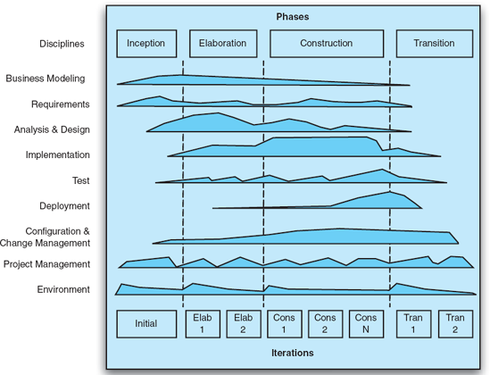
Figuras 16-14. Fases, iterações e disciplinas do Processo Racional Unificado (adaptado de Kroll e Kruchten, O Processo Unificado Racional Facilitado: Um Guia do Praticante para o RUP).
Mensagem de conclusão. Desde o desenvolvimento do modelo em espiral, engenheiros de software reconhecem amplamente que o uso de iteração e análise de risco é importante. RUP é um meta-processo ou estrutura de processos em que muitos processos iterativos (e lineares) são instâncias. Por exemplo, pode-se ver o modelo tradicional de cascata como uma instância de iteração única do RUP. O RUP tende a ver a arquitetura como um artefato de design, e não como uma disciplina omnipresente como defendemos neste livro mas as duas noções não são totalmente incompatíveis. RUP não é necessariamente um meta-processo universal; certas estratégias de desenvolvimento, como Programação Extrema ou Engenharia de Software Específica de Domínio, podem ter processos mais leves e fluidos que não se encaixam naturalmente em um modelo RUP estruturado e iterativo.
Arquitetura Orientada por Modelos
Arquitetura Orientada por Modelos (MDA) (Mukerji e Miller 2003) é uma metodologia padronizada pelo Object Management Group (OMG), o mesmo órgão que gerencia o padrão UML. O MDA tem como objetivo reconceituar o desenvolvimento de sistemas aproveitando o desenvolvimento de modelos que são refinados, por meio de uma série de transformações, em sistemas implementados. De forma confusa, a palavra "arquitetura" em Arquitetura Orientada por Modelos não se refere à arquitetura do sistema em desenvolvimento, mas sim à arquitetura dos diversos padrões e linguagens usados para implementar a abordagem MDA. Sinônimos para MDA incluem Desenvolvimento Orientado por Modelos (MDD) e Engenharia Orientada por Modelos (MDE); "MDA" é geralmente usado para se referir especificamente à abordagem OMG.
As figuras 16-15 apresentam uma visão geral em alto nível da MDA. Na MDA, os sistemas começam sendo descritos em modelos independentes de plataforma (PIMs). Esses PIMs descrevem a aplicação sem vinculá-la a tecnologias específicas de implementação; Qualquer número de linguagens pode ser usado para esse propósito, especialmente linguagens específicas de domínio. Em seguida, um modelo de definição de plataforma (PDM) é usado para especificar a plataforma-alvo para a implementação do sistema. Isso pode ser baseado em algum middleware ou tecnologia de implementação baseada em componentes, como CORBA, .NET, JavaBeans, entre outras. Ao combinar o conhecimento da aplicação no PIM com o conhecimento da plataforma no PDM, são criados um ou mais modelos específicos da plataforma (PSMs). Esses PSMs fazem parte de uma implementação de sistema em uma linguagem de implementação específica de domínio ou em uma linguagem de programação de uso geral, como C ou Java.
Idealmente, uma vez definidos os PIMs e PDMs, o restante das traduções pode ocorrer usando (ou pelo menos aproveitando) ferramentas automatizadas de tradução. O padrão separado OMG Queries/Views/Transformations (QVT) é uma forma de definir transformações de modelo. Assumindo que as translações estejam corretas e preservem propriedades salientes, o resultado da MDA deve ser um sistema fiel aos modelos originais.
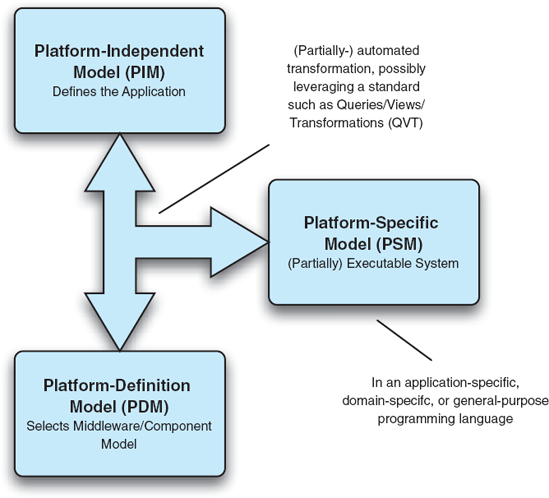
Figuras 16-15. Visão geral de alto nível da MDA.
Mensagem de conclusão. Como abordagem geral, a MDA é compatível com muitos dos mecanismos e ideias defendidos neste livro. Por exemploCapítulo 9On Implementation discute como tecnologias generativas podem ser usadas para gerar automaticamente implementações (parciais) a partir de modelos arquitetônicos, especialmente quando um framework de implementação de arquitetura é utilizado. A ideia por trás do MDA é fácil de entender, mas os detalhes práticos são um pouco mais difíceis de alcançar. Fazer transformações automatizadas de modelos para artefatos de implementação é difícil. Desenvolver modelos totalmente independentes da plataforma de uma aplicação também é difícil, já que o conhecimento das tecnologias de implementação disponíveis sempre informa e limita as arquiteturas. A MDA é muito mais fácil de empregar no contexto da DSSE, onde um domínio bem compreendido e restrito, arquiteturas de referência e frameworks existentes fornecem uma base muito melhor elaborada.
ASSUNTO FINAL
Este capítulo tentou fornecer visões gerais de alto nível de alguns dos padrões mais populares e conhecidos usados na prática. Uma coisa que não fica evidente neste capítulo é o nível de detalhe com que muitos desses padrões são especificados. As especificações de alguns dos padrões excedem o tamanho deste livro, e livros suplementares (e, em alguns casos, séries de livros) foram escritos para ajudar as pessoas a entender e aplicar esses padrões.
No entanto, o tamanho raramente é uma boa forma de avaliar o valor de um padrão. Por exemplo, faz sentido que padrões grandes e detalhados forneçam uma imensa quantidade de orientação, e de fato isso é frequentemente verdade. No entanto, que tipo de orientação eles oferecem? Frequentemente, padrões grandes permanecem pouco especificados: eles dão ao usuário liberdade demais ou opções demais, muitas vezes na tentativa de ampliar seu apelo ou aplicabilidade. Muitos dos maiores e mais amplos padrões (por exemplo, DoDAF, TOGAF) prescrevem processos e listas de verificação extensos. Essas regras geralmente são impossivelmente detalhadas um projeto que tentasse atender a todos os requisitos ou conselhos desses padrões nunca chegaria a realmente construir um sistema. Além disso, decidir correção e consistência é um exercício geralmente deixado para os desenvolvedores do sistema, com pouca orientação dos padrões.
Ao usar um padrão, um desenvolvedor ou organização deve sempre levar em consideração os custos e benefícios do padrão. Buscar e explorar efeitos de rede deve ser uma prioridade para quem emprega um padrão. Alguns padrões exploram efeitos de rede melhor do que outros. Por exemplo, um padrão como o UML é bem suportado por ferramentas maduras devido à sua grande comunidade de usuários, e modelos UML podem ser usados para comunicar ideias de forma mais eficiente entre diferentes pessoas e organizações devido à compreensão comum do significado de diferentes símbolos. No entanto, um padrão de processo pode ter menos efeito de rede: o valor do processo não necessariamente aumenta simplesmente porque mais organizações o utilizam, a menos que o suporte melhorado às ferramentas ou refinamentos de processos sejam efeitos colaterais desse uso.
Os padrões deste capítulo documentam muitas das melhores práticas técnicas já usadas com sucesso em projetos no passado. Seguir qualquer uma dessas práticas é, sem dúvida, melhor do que um desenvolvimento totalmente ad hoc, e os padrões ao menos fornecem um parâmetro para medir a completude ou a abrangência. Muitas decisões importantes, como quando modelagem suficiente foi feita, qual processo específico seguir ou como definir objetivos individuais do projeto, ainda precisam ser tomadas caso a caso. Orientações mais específicas e detalhadas não serão encontradas nos padrões mais genéricos (e, infelizmente, bem conhecidos e bem fundamentados). Desenvolvedores podem ter mais sorte combinando a amplitude de padrões genéricos com padrões mais específicos de domínio se tais padrões existirem.
Padrões são uma parte fundamental do uso da arquitetura de software na prática: sua criação, desenvolvimento e uso são motivados tanto por objetivos de negócios e organizacionais quanto técnicos. No próximo capítulo, continuamos o tema da arquitetura de software na prática, focando nas preocupações organizacionais: pessoas, funções e equipes.
O Caso de Negócios
Do ponto de vista empresarial, padrões podem ser vistos como uma decisão de fazer ou comprar. Adotar um padrão confere muitos benefícios: os adotantes basicamente compram a experiência e o tempo de esforços de engenharia anteriores, fornecedores e assim por diante. À medida que essas organizações evoluem o padrão, a qualidade do padrão é aprimorada, efetivamente de graça, e as organizações podem decidir quando e se devem migrar para a versão mais recente do padrão.
Os padrões oferecem um valor tremendo ao criar efeitos de rede: quanto mais organizações utilizam o padrão, mais valioso ele se torna. Se múltiplas organizações estiverem envolvidas em um único esforço de desenvolvimento, os padrões costumam ser a melhor forma de minimizar falhas de comunicação e dificuldades de integração que podem prejudicar um projeto que, de outra forma, é bem-sucedido.
Ao lidar com padrões, as empresas devem ter em mente duas ameaças principais. A primeira é se envolver demais ou fiel a uma abordagem específica quando isso não é justificado. A abordagem mais razoável é adotar os padrões que fazem sentido, mas prepare-se para um investimento moderado em descobrir como adaptá-los para seus propósitos.
Muitas empresas e organizações adotam padrões com a suposição equivocada de que todos os seus problemas empresariais serão resolvidos se simplesmente seguirem o padrão à risca. Como tentamos transmitir neste capítulo, muitos dos padrões mais conhecidos, bem fundamentados e populares são frequentemente os mais gerais e pouco especificados. Manter uma perspectiva racional sobre o escopo desses padrões é essencial para qualquer organização de desenvolvimento. As organizações devem definir seus objetivos de negócio e as estratégias para alcançá-los independentemente de qualquer padrão específico, e então escolher e adaptar padrões que as ajudem a alcançar seus objetivos com base nessas estratégias.
A segunda ameaça é ignorar um padrão que eventualmente se torna popular e encontrar esse padrão manipulado pelos concorrentes. Por essa razão, muitas grandes empresas simplesmente participam de todos os processos de padronização relacionados ao seu negócio. Para organizações que não têm recursos para isso, uma abordagem mais criteriosa e ágil é apropriada. Essas organizações devem acompanhar no mínimo o desenvolvimento de todos os padrões relevantes, mas internamente evitar se apegar demais a qualquer padrão específico.
PERGUNTAS DE REVISÃO
EXERCÍCIOS
LEITURA ADICIONAL
Este capítulo tenta destilar e extrair a essência de alguns dos padrões mais conhecidos e influentes da engenharia de software atualmente. Ainda assim, as poucas páginas dedicadas a cada padrão não conseguem capturar o alcance da maioria deles. Como mencionado acima, o tamanho de vários desses padrões excede o tamanho deste livro.
A melhor forma de aprender sobre um padrão geralmente é ir até a fonte. Referências estão incluídas no IEEE 1471 (IEEE-SA Standards Board 2000), DoDAF (DoD Architecture Framework Working Group 2004), TOGAF (The Open Group 2003), RM-ODP (ISO/IEC 1998), UML (Booch, Rumbaugh e Jacobson 2005) e seu meta-modelo MOF (Object Management Group 2002), SysML (SysML Partners 2005), AADL (Feiler, Lewis e Corporation 2003), ADML (Spencer 2000), Rational Rose (Rational Software Corporation 2003), Telelogic System Architect (Telelogic AB 2007), RUP (Kruchten 2003), MDA (Mukerji e Miller 2003), entre outros. Cuidado com os "resumos executivos" contidos em algumas dessas normas ou documentação relacionada; Essas descrições costumam estar cheias de hype e é difícil obter uma avaliação clara de um padrão com elas. Para fins comparativos, pode ser útil examinar padrões não relacionados à arquitetura, como POSIX (IEEE 2004) e HTTP (Fielding et al. 1999), ou padrões específicos de domínio, como a Software Communications Architecture (SCA) (Modular Software-programmable Radio Consortium 2001), introduzida emCapítulo 15.
[23] TOGAF é uma marca registrada do The Open Group.